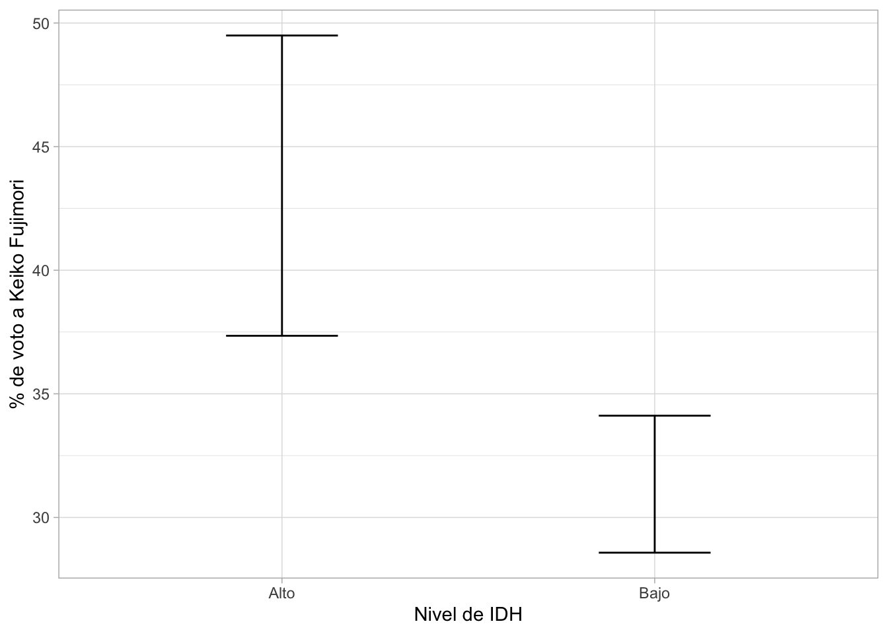
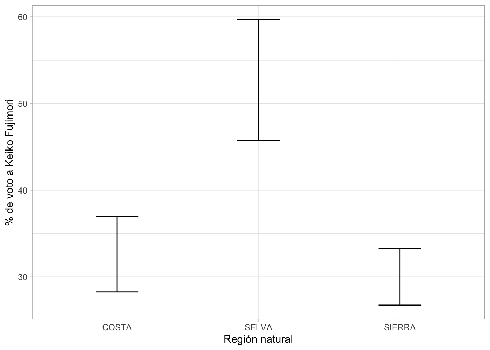
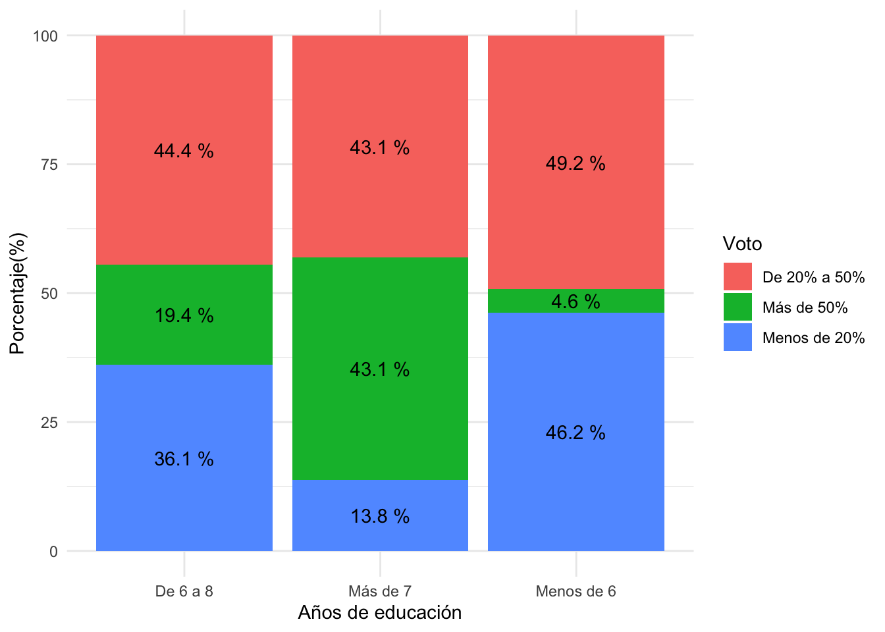
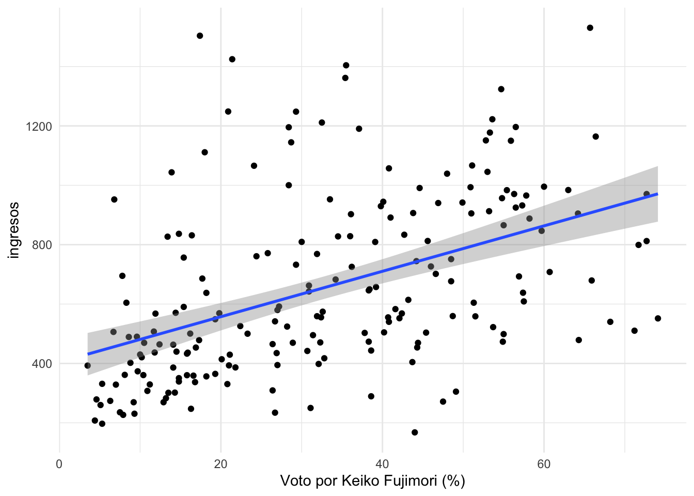

FACULTAD DE CIENCIAS SOCIALES - PUCP
Curso: SOC294 - Estadística para el análisis sociológico 1
Semestre 2024 - 2
library(rio)
library(dplyr)
library(ggplot2)
library(lsr)data = import("Data-provincias.xlsx")¿Existe alguna diferencia en el promedio del voto (%) por Keiko Fujimori (FP) en segunda vuelta según el nivel de IDH (alto/bajo)?
tabla1 = data %>%
group_by(IDH_cat) %>%
summarise(Media = mean(FP, na.rm=T),
LimSup = ciMean(FP, na.rm=T)[1],
LimInf = ciMean(FP, na.rm=T)[2])
tabla1## # A tibble: 2 × 4
## IDH_cat Media LimSup LimInf
## <chr> <dbl> <dbl> <dbl>
## 1 Alto 43.4 37.3 49.5
## 2 Bajo 31.3 28.6 34.1ggplot(tabla1, aes(x=IDH_cat, y=Media))+
geom_errorbar(aes(ymin = LimInf, ymax= LimSup),width=0.3)+
theme_light()+
xlab("Nivel de IDH")+ylab("% de voto a Keiko Fujimori")
t.test(data$FP ~ data$IDH_cat)##
## Welch Two Sample t-test
##
## data: data$FP by data$IDH_cat
## t = 3.7185, df = 33.054, p-value = 0.000741
## alternative hypothesis: true difference in means between group Alto and group Bajo is not equal to 0
## 95 percent confidence interval:
## 5.469224 18.682394
## sample estimates:
## mean in group Alto mean in group Bajo
## 43.42174 31.34593tabla2 = data %>%
group_by(Reg_nat) %>%
summarise(Media = mean(FP, na.rm=T),
LimSup = ciMean(FP, na.rm=T)[1],
LimInf = ciMean(FP, na.rm=T)[2])
tabla2## # A tibble: 3 × 4
## Reg_nat Media LimSup LimInf
## <chr> <dbl> <dbl> <dbl>
## 1 COSTA 32.6 28.3 37.0
## 2 SELVA 52.7 45.7 59.7
## 3 SIERRA 30.0 26.7 33.3ggplot(tabla2, aes(x=Reg_nat, y=Media))+
geom_errorbar(aes(ymin = LimInf, ymax= LimSup),width=0.3)+
theme_light()+
xlab("Región natural")+ylab("% de voto a Keiko Fujimori")
anova=aov(data$FP~data$Reg_nat)
summary(anova)## Df Sum Sq Mean Sq F value Pr(>F)
## data$Reg_nat 2 6763 3382 11.1 2.75e-05 ***
## Residuals 192 58515 305
## ---
## Signif. codes: 0 '***' 0.001 '**' 0.01 '*' 0.05 '.' 0.1 ' ' 1¿Existe alguna diferencia en el voto (%) por Keiko Fujimori (FP) (en segunda vuelta según si es de la sierra o no (Sierra_no)?
tabla3 = table(data$FP_cat,data$Años_educ)
tabla3##
## De 6 a 8 Más de 7 Menos de 6
## De 20% a 50% 32 25 32
## Más de 50% 14 25 3
## Menos de 20% 26 8 30prop= as.data.frame(prop.table(tabla3,2))
prop## Var1 Var2 Freq
## 1 De 20% a 50% De 6 a 8 0.44444444
## 2 Más de 50% De 6 a 8 0.19444444
## 3 Menos de 20% De 6 a 8 0.36111111
## 4 De 20% a 50% Más de 7 0.43103448
## 5 Más de 50% Más de 7 0.43103448
## 6 Menos de 20% Más de 7 0.13793103
## 7 De 20% a 50% Menos de 6 0.49230769
## 8 Más de 50% Menos de 6 0.04615385
## 9 Menos de 20% Menos de 6 0.46153846names(prop)=c("Voto","Años_educ","Porcentaje")ggplot(prop, aes(x=Años_educ,y=Porcentaje*100, fill=Voto))+
geom_bar(stat="identity", position="stack")+
geom_text(aes(label=paste(round(Porcentaje*100,1),"%")),
position = position_stack(vjust = 0.5))+
ylab("Porcentaje(%)")+xlab("Años de educación")+
theme_minimal()
chisq.test(tabla3)$expected##
## De 6 a 8 Más de 7 Menos de 6
## De 20% a 50% 32.86154 26.47179 29.66667
## Más de 50% 15.50769 12.49231 14.00000
## Menos de 20% 23.63077 19.03590 21.33333chisq.test(tabla3)##
## Pearson's Chi-squared test
##
## data: tabla3
## X-squared = 31.757, df = 4, p-value = 2.145e-06ggplot(data, aes(x=FP, y=ingresos))+
geom_point()+
geom_smooth(method="lm")+
xlab("Voto por Keiko Fujimori (%)")+
theme_minimal()## `geom_smooth()` using formula = 'y ~ x'
cor.test(data$FP,data$ingresos)##
## Pearson's product-moment correlation
##
## data: data$FP and data$ingresos
## t = 7.2777, df = 193, p-value = 8.34e-12
## alternative hypothesis: true correlation is not equal to 0
## 95 percent confidence interval:
## 0.3460994 0.5675505
## sample estimates:
## cor
## 0.4640447